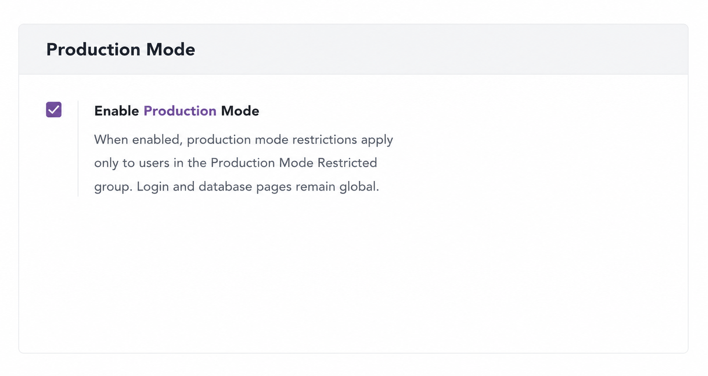
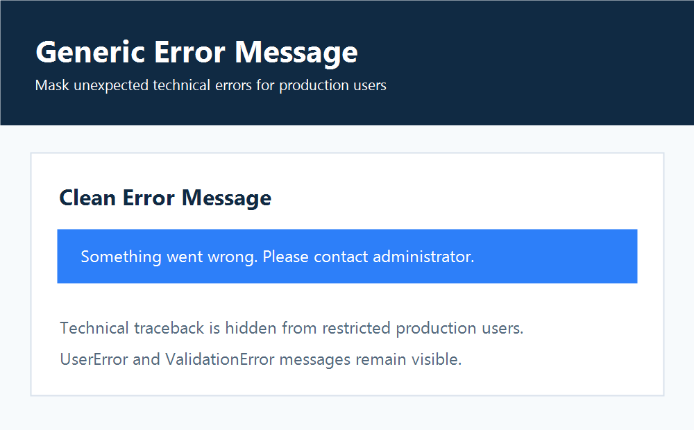
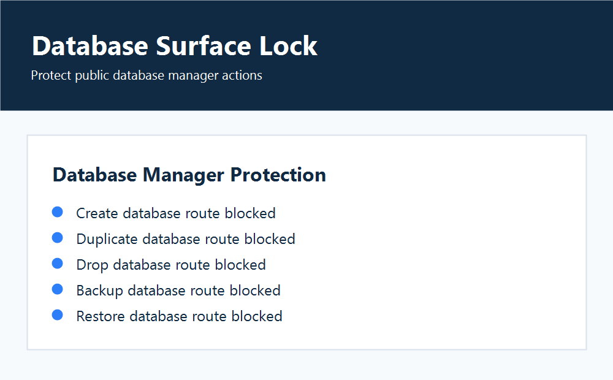

What It Does
User Group Based
Restrictions apply to users in the Production Mode Restricted group after the global setting is enabled.
Debug Access
Developer mode is blocked for restricted users, and debug flags are removed from their sessions.
Error Display
Unexpected technical errors are shown as a generic dialog. UserError and ValidationError messages remain visible.
Database Routes
Public database manager actions such as create, drop, backup, restore, and change password are blocked when production mode is detected.
Screenshots



Configuration
- Install the Production Mode module.
- Open Settings and enable the Production Mode option.
- Add selected users to the Production Mode Restricted group.
- Log in as a restricted user and verify that debug tools are unavailable.
Limitations
This module does not replace Odoo access rights, database backups, reverse proxy security, server monitoring, or log management. Administrators may still see technical details in server logs.
Privacy
This module does not send customer data to any external service.